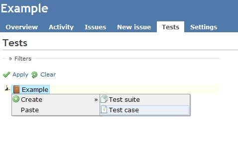

Manage test cases and suites
When you click on the Tests tab, a tree structure for test cases is shown.
This tree is consist of 3 kinds nodes (project, test suite and test case).
- Project: is the root of all test suites and cases.
- Test suite: is a collection of test cases.
- Test caseis prepared for verification with some test steps.

When you right-click on the node of project or test suite, the context menu will be shown.
If you select "Create" and "Test suite", the dialog for test suite will be shown.
- Name: is the name of test suite.
- Details: is the description of test suite.
- Keywords: is tags of test suite. These are used for filtering test cases.
If you select "Create" and "Test case", the dialog for test case will be shown.
- Name: is the name of test suite.
- Details: is the description of test suite.
- Keywords: is tags of test suite. These are used for filtering test cases.
Assign test cases to the test plan
Assign tester and expected date to a test case
Execute tests and issue a bug